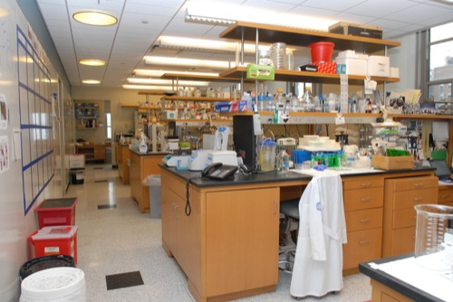

Cell & Developmental Biology
(A101-A116)

×
Interim Dean of Graduate School
Randi Silver (A125-A127)
×
Vice Provost of Development
Larry Schafer (A121)
×
Harold & Ruth Uris Faculty Room
(A126)
 ×
×
Assistant Provost
Harry Lander (A128)
×
Graduate School of Medical Sciences Offices
(A131)
×
Genomics Resources Core Facility
(A50-A162)
×
Art & Photography Department
(A169-A179)
×
Weill Auditorium/Education Center
(C200)
×
Tri Institutional MD-PhD Program
(C103)
×
Samuel J Wood Library
(C107-C119 & D120 & LC101-LC106
C003-C019 & D012-014 & LC004-011)
×
WCMC Deans Corridor
(F100-F113)
×
Griffis Faculty Club
(D115-D117 & GH 102-GH 107)
×
Biochemistry & Research Center
(E-LC Access between Floors 1 & 2)
×
Pathology - Autopsy Room
×
Garden Cafe
(A021 & A022)
×